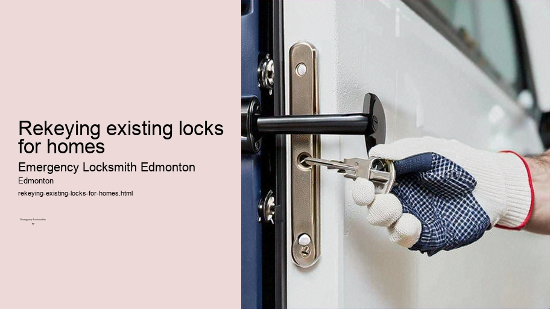

News
24/7 Emergency Locksmith Services
24/7 Emergency Locksmith Services
Emergency Locksmith Services
Residential lockout assistance
Automotive lockout services
Broken key extraction
Emergency lock repair and replacement
Commercial Locksmith Solutions in Edmonton
Commercial Locksmith Solutions in Edmonton
Highsecurity lock installations
Master key systems and rekeying services
Access control system integration
Panic bar installation and maintenance
Residential Locksmith Services in Edmonton
Residential Locksmith Services in Edmonton
Home lockout response
Rekeying existing locks for homes
Installation of new locks and deadbolts
Repairing or replacing residential locks
Automotive Locksmith Services in Edmonton
Automotive Locksmith Services in Edmonton
Car key duplication and replacement
Transponder key programming
Ignition repair and replacement services
Vehicle trunk opening
About Us

Rekeying existing locks for homes
UPVC door and window locks Edmonton
Rekeying Existing Locks for Homes: The Smart Choice for Enhanced Security
Home is where the heart is, and ensuring its security is paramount to the peace of mind of any homeowner.
Residential locksmith Edmonton
One often overlooked, yet critical aspect of home security is the locks on our doors. While we tend to focus on high-tech security solutions, such as alarm systems and surveillance cameras, the integrity of our physical locks remains a fundamental component of overall home protection. This brings us to the concept of rekeying existing locks—a simple, cost-effective measure that can significantly enhance the safety of one's abode.
But what exactly does rekeying involve? Unlike replacing a lock, where you remove the entire lock from the door and install a new one, rekeying involves changing the internal workings—specifically, the tumblers or key pins—of an existing lock so that it can be operated by a new key.
Lock rekeying Edmonton
Motorcycle locksmith Edmonton
During this process, a locksmith will adjust these components so that only a new key can unlock them while rendering any old keys useless.
UPVC door and window locks Edmonton
Why should homeowners consider rekeying their locks? The reasons are plentiful.
Mobile locksmith Edmonton
For starters, when moving into a new home, there's no telling how many copies of your house keys exist or who might possess them. Previous owners may have distributed spare keys to family members or friends; maintenance personnel or contractors might also hold copies.
High-security lock systems Edmonton
Rekeying eliminates this uncertainty by setting a fresh start with unique keys.
Another scenario necessitating rekeying services could arise after losing your keys. If they fall into unscrupulous hands and your address is known or easily discovered—as might be the case if you lose an entire purse or wallet—you're potentially at risk for break-ins. Similarly, in cases where you lend out keys which aren't returned promptly—or at all—it would be wise to consider rekeying your locks.
Furthermore, relationships sometimes change; whether roommates move out or personal relationships end acrimoniously, it’s prudent to ensure former insiders cannot gain future access without permission.
The beauty of rekeying lies in its simplicity and affordability compared to replacing locks entirely. Most standard pin tumbler locks can be swiftly reconfigured by professionals without needing any replacement hardware—which means less waste and expense for homeowners concerned about being both eco-friendly and budget-conscious.
It's not just about thwarting unwelcome attempts at entry either; having uniquely keyed doors fosters better control over who has access and when they have it—granting peace of mind through enhanced management over your home’s security parameters.
Moreover, while embarking on this task independently might seem like an appealing challenge for DIY enthusiasts, seeking professional locksmith services ensures accuracy in configuration changes—minimizing risks associated with improperly installed tumblers which could lead to malfunction or compromised security effectiveness.
In conclusion, as we continue embracing advanced technological safeguards within our homes—from smart doorbells to voice-activated alarms—we must not neglect traditional fortifications like door locks that stand guard silently but steadfastly against intrusions. Rekeying existing locks represents an intelligent strategy towards reinforcing residential sanctums against invasions; it's an investment in tranquility knowing that one has taken proactive steps toward safeguarding what matters most—their home and family.
Installation of new locks and deadbolts
Check our other pages :
Residential Locksmith Services in Edmonton
Vehicle trunk opening
Home lockout response
Frequently Asked Questions
What is rekeying and how does it differ from changing a lock?
Rekeying involves changing the internal components of a lock (the pins or tumblers) so that it works with a new key without replacing the entire lock mechanism. In contrast, changing a lock entirely means installing a brand new hardware. Rekeying is usually quicker and more cost-effective.
Can all locks be rekeyed, or are there exceptions?
Most standard pin tumbler locks can be rekeyed; however, some high-security locks, electronic locks, or damaged/obsolete locks may not be suitable for rekeying and might require replacement.
How long does it take to rekey a lock, and can it be done on an emergency basis in Edmonton?
The actual process of rekeying a single lock typically takes about 20-30 minutes. Emergency locksmith services in Edmonton often offer quick response times for urgent situations, meaning they could perform the service at your location shortly after being contacted.
Is it necessary to have the original key to get my locks rekeyed?
Having the original key can make the process easier and faster; however, if youve lost your keys, an experienced locksmith can still rekey your locks by picking them open or disassembling them as needed.
How much does it generally cost to have my house locks rekeyed by an emergency locksmith in Edmonton?
Costs vary depending on factors such as number of locks, type of locks, time of day (emergency rates may apply), and travel distance for the locksmith. Its best to call local locksmiths for quotes but expect a base service fee plus charges per lock cylinder that needs to be rekeyed.